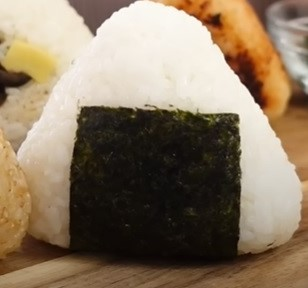

My First Cookbook
Hello, this is Sara. This is my cookbook. All receipes I have found on youtube. I hope ye enjoy.
- Onigiri rice ball 
- use plastic wrap to shape rice ball
- sprinkle salt on the wrap
- Tips
Ingredients:
- 150g rice
- 1 tbsp tuna
- 1/2 tbsp mayo
- 1/2 tbsp soy sauce
- 1 piece of seaweed
Instructions:
- open 1 canned tuna
- drain the oil or water
- take 1/2 tbsp tuna from the canned tuna
- take 1/2 tbsp mayo
- mix well and then the filling is ready!
- use plastic wrap to shape onigiri because bacteria can spread if you don't
- Sprinkle salt on the wrap
- put the rice on that plastic wrap
- dig a little hole for the filing
- try to put the filling inside
- make a triangle (you can also use the Riceball mould to make the shape)
- 1 dried seaweed